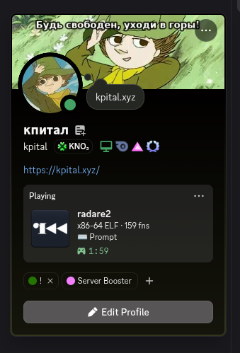
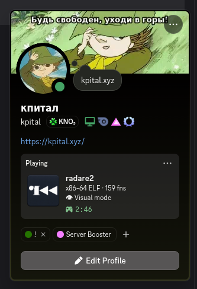
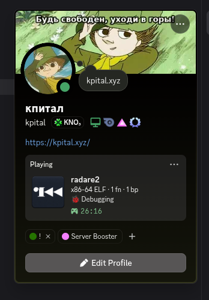
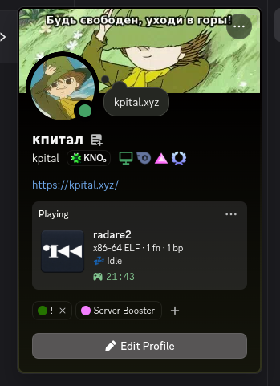

r2discord — Discord Rich Presence pro radare2
Um plugin simples que mostra no seu status do Discord o que você tá fazendo dentro do radare2.
fala pessoal, aqui é o kpital! vim mostrar um plugin simples que eu fiz no tempo livre pro radare2.
ele mostra o seu status atual do r2 direto no Discord. se você é do tipo que gosta de mostrar o que tá fazendo (ou só quer ver o "Jogando radare2" no perfil kkkk), pode usar essa bosta que eu criei.
foi coisa rápida, feita ali com IA só pra postar mesmo. é uma contribuição simples, bem simples, mas ajuda!
Como fica
| Prompt | Visual mode |
|---|---|
 |  |
| Debugging | Idle |
|---|---|
 |  |
Por padrão ele é privado: nome de arquivo e de função só aparecem se você rodar e discord.showname=true.
Instalar
O plugin já tá no banco de dados do próprio r2pm (o gerenciador de pacotes do radare2), então não precisa adicionar repositório nenhum. Se você tem o radare2 e o r2pm, já tá pronto:
r2pm -U
r2pm -ci r2discordReinicia o r2. O status começa depois do primeiro comando que você rodar, e o comando discord mostra o estado da conexão.
Repositório
O código, o build na mão e as opções de configuração tão aqui:
se tiver sugestão, manda um e-mail pra kp1tal@disroot.org que eu vou implementando. é isso, espero que goste!